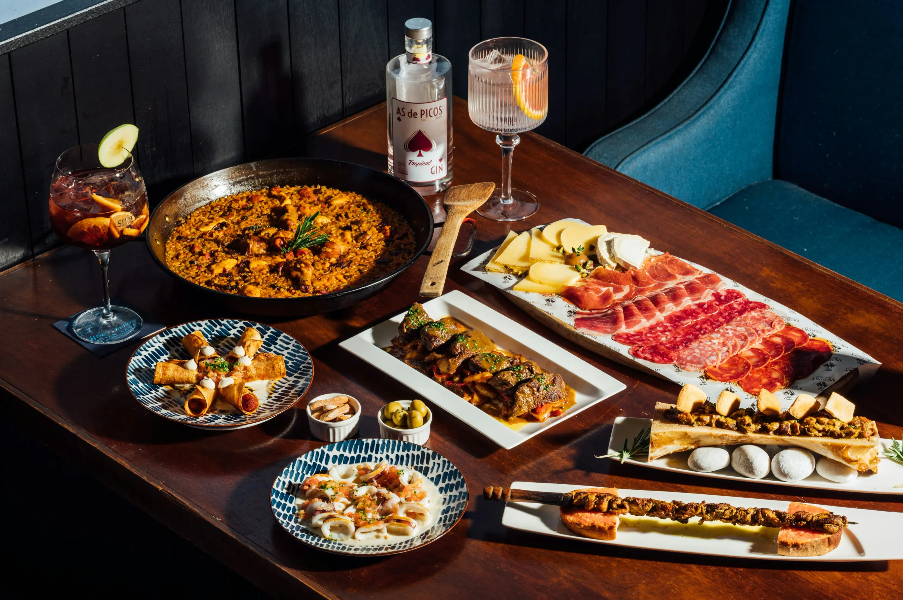

Som apassionats dels viatges i de la cuina
Benvinguts al nostre racó digital, un espai que neix de la nostra passió compartida per dues grans aficions: viatjar i cuinar. Aquesta plataforma vol ser molt més que un simple lloc web. És un diari obert d’experiències, un receptari viu, i una finestra al món a través de la gastronomia.
Tot va començar amb un viatge improvisat a Andalusia. Ens vam perdre pels carrers de Sevilla, vam descobrir mercats locals plens d’olors, sabors i colors, i vam tastar les millors tapes que havíem provat mai. Aquell viatge va ser el detonant d’una sèrie d’aventures culinàries per tot el territori espanyol. Hem explorat els sabors potents del País Basc, els productes de proximitat de Catalunya, els guisats contundents de Castella i els arrossos saborosos del País Valencià. Cada lloc ha aportat un gra de sorra a la nostra manera d'entendre la cuina i la cultura.
Però no ens hem aturat aquí. França ens ha captivat amb la seva elegància gastronòmica. A la Provença, vam aprendre a valorar els ingredients senzills i frescos, com l’oli d’oliva verge, l’all i les herbes aromàtiques. A la Bretanya, ens vam enamorar de les crêpes, els mariscs i la sidra. A París, vam tenir el privilegi de dinar en petits bistrós que amagaven grans tresors culinaris, servits sempre amb passió i orgull.
El nostre objectiu amb aquesta web és compartir tot això amb vosaltres: receptes que hem après, històries que hem viscut i llocs que us recomanem visitar si també estimeu la cuina i la descoberta cultural. Aquí hi trobareu receptes amb història, guies de viatge gastronòmic, fotografies reals dels nostres plats i racons preferits, i suggeriments per viure l’experiència amb els cinc sentits.
Creiem que cuinar és una forma de viatjar sense moure’s de casa, i que viatjar és una manera d’aprendre a cuinar d’una forma més conscient, respectuosa i creativa. És per això que us convidem a explorar aquesta plataforma, a provar receptes, a perdre-us per les nostres cròniques i a descobrir la màgia que es pot trobar al plat més senzill.
Gràcies per acompanyar-nos en aquest viatge. Bon profit i bon camí!